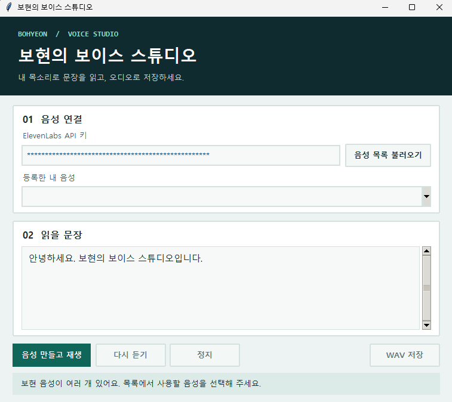

내 음성 불러오기
API 키로 ElevenLabs에 연결해 계정에 등록된 복제 음성을 조회합니다. 같은 이름의 음성은 표시된 ID로 구분해 선택할 수 있어요.
PYTHON PROJECT / VOICE STUDIO
보현의 보이스 스튜디오는 ElevenLabs에 등록한 내 음성으로 문장을 읽어주는 Windows용 Python 프로그램입니다. 음성을 고르고, 문장을 입력하고, 완성된 오디오를 WAV로 저장하세요.
사용 방법 살펴보기 ↓
WHAT IT DOES
API 키로 ElevenLabs에 연결해 계정에 등록된 복제 음성을 조회합니다. 같은 이름의 음성은 표시된 ID로 구분해 선택할 수 있어요.
입력한 한국어 문장을 선택한 목소리로 합성하고 재생합니다. 완성된 음성은 다시 듣거나 재생을 정지할 수 있어요.
마음에 드는 결과를 WAV 파일로 저장합니다. 저장 대화상자에서 파일 이름과 위치를 직접 선택할 수 있어요.
QUICK START
Windows에 Python과 보이스 스튜디오 프로그램을 준비하고, 내 음성이 등록된 ElevenLabs 계정의 API 키를 사용하세요.
보이스 스튜디오 파일이나 바탕화면 바로가기를 더블클릭합니다. 연결된 API 키가 준비돼 있으면 음성 목록을 자동으로 불러옵니다.
API 키 입력칸에 키를 붙여넣고 ‘음성 목록 불러오기’를 누릅니다. 키에는 음성 조회와 텍스트 음성 변환 권한이 필요해요.
‘등록한 내 음성’ 목록에서 사용할 목소리를 선택합니다. ‘보현’처럼 이름이 같은 음성이 여러 개라면 ID를 확인해 골라주세요.
‘읽을 문장’에 내용을 입력하고 ‘음성 만들고 재생’을 누릅니다. 결과를 들은 뒤 ‘다시 듣기’와 ‘정지’를 사용할 수 있어요.
‘WAV 저장’을 누르고 원하는 이름과 폴더를 선택합니다. 같은 결과를 다시 들을 때는 ‘다시 듣기’를 누르면 됩니다.
이 페이지는 프로그램 소개와 사용 안내입니다. 음성 생성은 Windows 프로그램에서 실행되며, 입력한 문장은 ElevenLabs API로 전송됩니다. 생성 시 계정의 크레딧이 사용될 수 있어요. API 키는 개인 프로그램의 입력칸에서 사용하세요.
HELP
API 키가 내 음성을 등록한 계정의 키인지, 음성 조회 권한이 있는지 확인해 주세요. 연결 후에도 음성이 없다면 ElevenLabs의 ‘내 음성’에 복제 음성을 먼저 등록해야 합니다. 연결 오류나 요청 결과는 프로그램 하단 상태 메시지에서 확인할 수 있어요.